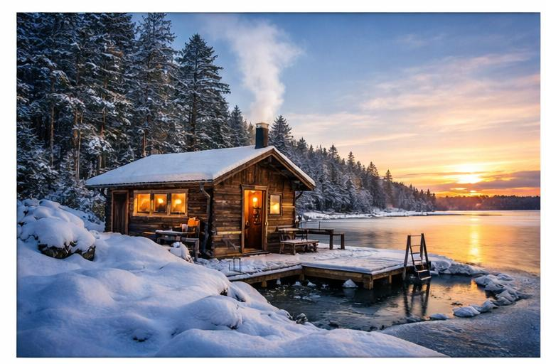
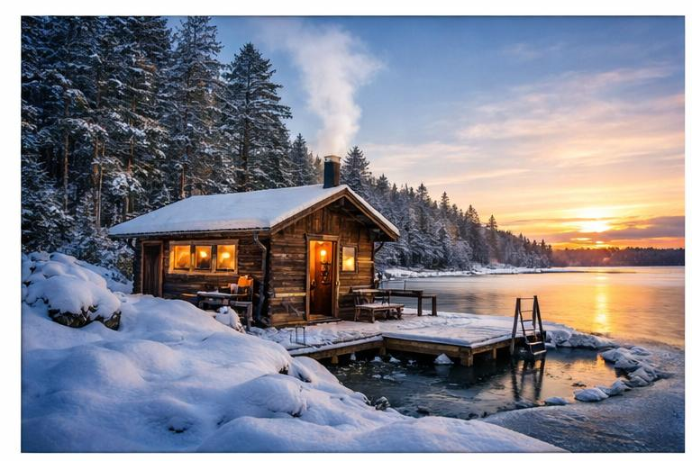
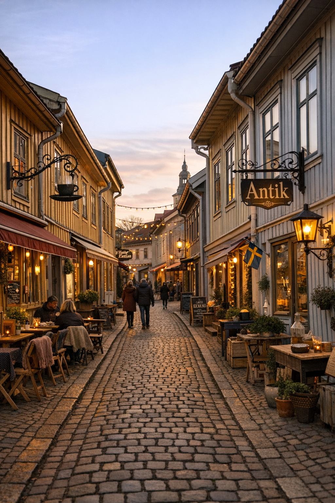
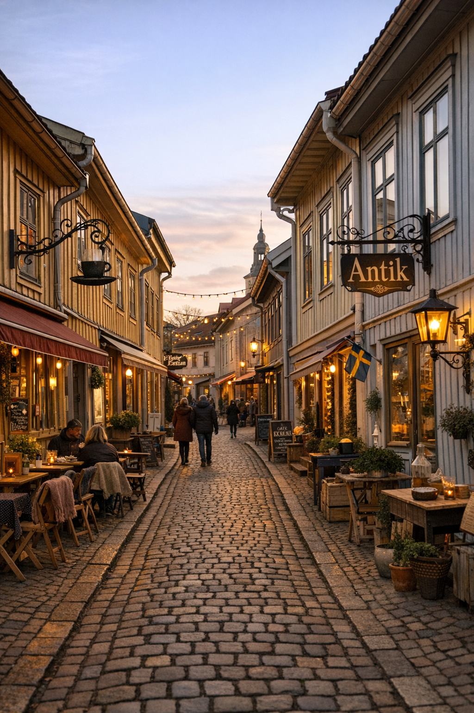
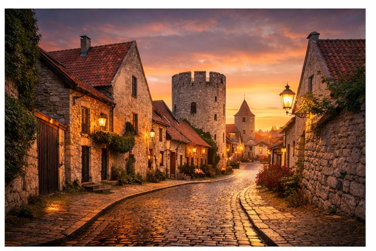

Bem‑vinda, Mariah!
Oi linda!
Este guia foi preparado com todo o carinho, pensando em cada momento que você pode viver na Suécia. Mesmo
com um oceano de distância, quero que você sinta a minha presença em cada descoberta e em cada escolha.
Os roteiros e lugares sugeridos são um presente amoroso — um convite para se permitir aproveitar a vida
como merece; foi tudo feito com muito carinho e cuidado por alguém que adoraria estar ao seu lado nessa
e em muitas viagens. Use as seções acima para explorar as opções de viagem e clique nos corações para
salvar seus lugares favoritos para consultar depois. Aproveite, te amo! ❤️
Roteiro de 3 Dias
Três dias é o mínimo para sentir a essência sueca sem pressa. Nesta sugestão você começa mergulhando na história e na cultura de Estocolmo, navega pelo arquipélago para entender por que os locais amam tanto a natureza e termina renovando corpo e alma com rituais de bem‑estar e uma refeição inesquecível. Cada etapa tem um motivo e uma história.

 

-
Dia 1: Estocolmo cultural
Comece pelo coração da capital, Gamla Stan, com suas ruas de paralelepípedos e arquitetura medieval. Em seguida, encante‑se no Museu Vasa com o navio de guerra do século XVII recuperado quase intacto. Termine a noite em um bar de coquetéis na região de Östermalm, brindando à aventura que se inicia. Aproveite também para visitar o Palácio Real e a Catedral de Storkyrkan, fazer um fika em um café tradicional e explorar lojinhas de artesanato e design nas ruelas escondidas.
-
Dia 2: Arquipélago de Estocolmo
Faça um passeio de barco até algumas das milhares de ilhas do arquipélago, como Fjäderholmarna ou Vaxholm. Aproveite o ar puro, caminhe por vilarejos coloridos e experimente um almoço de frutos do mar com vista para o mar Báltico. Passe por ateliês de artesanato e galerias de arte ou alugue um caiaque para explorar as ilhotas por conta própria. A natureza aqui é a protagonista.
-
Dia 3: Bem‑estar e gastronomia
Dedique a manhã ao bem‑estar em uma sauna sueca seguida de banho gelado; o contraste revigora corpo e mente e faz parte da cultura local. À noite, celebre com um jantar em um restaurante estrelado — uma oportunidade de provar a nova gastronomia nórdica em grande estilo. Para tornar o dia memorável, reserve uma mesa no Frantzén, Ekstedt ou AIRA e viva uma experiência culinária inesquecível.
Roteiro de 5 Dias
Cinco dias permitem equilibrar vida urbana e paisagens naturais. Este roteiro aprofunda sua experiência em Estocolmo, explora mais do arquipélago e apresenta a vibe descontraída de Gotemburgo, a segunda maior cidade do país.
 

-
Dias 1–2: Estocolmo detalhada
Use dois dias para mergulhar mais fundo na capital: visite museus como o Vasa e o Fotografiska, caminhe pelos bairros descolados de Södermalm e Östermalm, encontre cafés charmosos para o fika (pausa para café com bolinhos) e faça compras em lojas de design escandinavo. Dedique um dia inteiro à ilha de Djurgården, onde ficam o parque ao ar livre Skansen, o Museu ABBA e o Museu Nórdico, e aproveite as ofertas do dagens rätt ao meio‑dia em restaurantes locais.
-
Dia 3: Novo arquipélago
Aventure‑se por outra ilha do arquipélago, como Sandhamn, com suas praias e trilhas, ou Grinda, repleta de florestas e campos. Aproveite para fazer um piquenique à beira‑mar. Caminhe por bosques e praias desertas e, se quiser prolongar a experiência, hospede‑se em uma cabana e sinta a paz das ilhas ao entardecer.
-
Dias 4–5: Gotemburgo
Viaje de trem até Gotemburgo e descubra o bairro histórico de Haga, com lojas vintage e cafés acolhedores. Desfrute de frutos do mar fresquíssimos no mercado Feskekôrka e experimente a cena gastronômica local, que rivaliza com a da capital. Aproveite para visitar o parque de diversões Liseberg, o centro de ciência Universeum, o Jardim Botânico e a Ópera de Gotemburgo.
Roteiro de 7 Dias
Uma semana abre espaço para experiências improváveis e memoráveis. Este roteiro equilibra dias urbanos, contato profundo com a natureza e uma escapada até a medieval Visby, patrimônio da humanidade. Perfeito para quem quer ir além do óbvio.

-
Dias 1–3: Estocolmo além do básico
Depois de ver os pontos clássicos, dedique tempo ao Fotografiska e suas exposições inovadoras, faça uma aula de culinária nórdica ou um tour de arte de rua e reserve uma mesa em restaurantes modernistas como Ekstedt ou AIRA para experimentar a cozinha local de vanguarda. Explore também bairros como Södermalm, faça compras em brechós e lojas vintage, participe de tours gastronômicos e visite mercados como o Östermalmshallen para provar especialidades locais.
-
Dia 4: Imersão na natureza
Reserve este dia para uma imersão mais longa: escolha entre um cruzeiro de dia inteiro pelas ilhas remotas do arquipélago de Estocolmo, uma trilha leve em uma reserva natural ou até mesmo um passeio de caiaque. Conecte‑se com a paisagem sueca no seu ritmo. Se preferir terra firme, visite a Reserva Natural de Tyresta ou outro parque nacional próximo à capital.
-
Dias 5–6: Gotemburgo com calma
Explore museus como o Universeum e a Ópera de Gotemburgo, passeie de barco pelos canais e sinta o clima relaxado da cidade. Aproveite para fazer uma sauna e spa à moda local e descubra bares e restaurantes escondidos em Magasinsgatan. Inclua no roteiro o parque de diversões Liseberg, relaxe em um spa com sauna, percorra as ruas de Magasinsgatan e entre em butiques e galerias independentes.
-
Dia 7: Visby (Gotland)
Termine a viagem com uma escapada à ilha de Gotland. Caminhe pelas muralhas de Visby, patrimônio mundial da UNESCO, visite ruínas de igrejas medievais e se perca entre casas coloridas e rosas trepadeiras. A atmosfera romântica da cidade será um encerramento perfeito. Não deixe de provar a culinária local no mercado de Visby e caminhar pelas muralhas ao pôr‑do‑sol, quando as pedras assumem tonalidades douradas.
Mapa
Veja abaixo um mapa com os principais pontos citados nos roteiros. Use os filtros para visualizar apenas determinadas categorias de interesse. Sem internet? Sem problemas: o mapa será ocultado automaticamente e o guia continua perfeito.
Onde Comer & Beber
Abaixo algumas sugestões de restaurantes, cafés e bares para Mariah:
-
Frantzén – Estocolmo
★★★ Michelin. Experiência imersiva onde o jantar começa com um aperitivo no lounge, continua com explicação dos ingredientes e termina com pratos criativos preparados à sua frente. O serviço funciona como um relógio e torna a noite inesquecível.
-
Ekstedt – Estocolmo
★ Michelin. Tudo é preparado sobre o fogo, sem eletricidade; os clientes iniciam com um tour pela cozinha e experimentam ostras defumadas com algas e outros sabores intensos.
-
Koka – Gotemburgo
★ Michelin. Ambiente moderno de madeira clara; menu degustação sazonal com pratos como bisque de langostim picante e veado com molho de groselha preta.
-
AIRA – Estocolmo
★★ Michelin. Design arrojado à beira de Djurgården; cozinha aberta e pratos elegantemente compostos com ingredientes nórdicos de primeiríssima qualidade, acompanhados de serviço atencioso.
-
Icebar – Estocolmo
Um bar feito inteiramente de gelo onde você bebe coquetéis servidos em copos de gelo, vestido com casacos térmicos. A temperatura negativa cria uma experiência divertida e diferente para terminar a noite com estilo.
-
Fika Fabriken – Estocolmo
Café acolhedor perfeito para a pausa do "fika" — o ritual sueco de café com um kanelbulle (cinnamon bun).
-
Magasin de Vin – Gotemburgo
Bar de vinhos descolado no bairro Magasinsgatan, com ótimas opções de petiscos e ambiente íntimo.
-
Bacchanale – Visby
Bistrô charmoso com pratos sazonais e coquetéis autorais, ideal para um jantar romântico em Gotland.
-
DalaNisse – Estocolmo
Taverna tradicional sueca próxima a Gamla Stan, famosa pelo dagens rätt (prato do dia) servido no almoço a preço acessível e pelos pratos clássicos como almôndegas e arenque.
-
Checa – Estocolmo
Restaurante contemporâneo de cozinha peruana com influências nórdicas, ideal para quem busca sabores diferentes e um ambiente elegante no bairro de Södermalm.
-
Bord 27 – Gotemburgo
Restaurante moderno e intimista no centro de Gotemburgo com uma carta de vinhos naturais e pratos criativos que mudam de acordo com as estações.
-
Östergatan No. 25 – Malmö
Gastrobar em Malmö com pratos sazonais, incluindo opções vegetarianas e veganas, e um ambiente descontraído perfeito para um jantar com amigos.
-
Tjoget – Estocolmo
Incluído entre os melhores bares do mundo, o Tjoget combina bar de coquetéis, vinhos e restaurante em um ambiente vibrante no bairro de Södermalm. Ideal para terminar a noite com boa música e drinks criativos.
-
Feskekôrka – Gotemburgo
Mercado de frutos do mar instalado em um edifício que lembra uma igreja, onde você pode provar ostras, lagostas e outros peixes fresquíssimos ou comprar para levar. Ótimo para experimentar a culinária do mar em um ambiente típico de Gotemburgo.
Dicas & Cultura
- Moeda & pagamentos: A Suécia é praticamente cashless; use cartão ou Apple/Google Pay para quase tudo e leve apenas um pouco de dinheiro para mercados e feiras.
- Filas e paciência: Os suecos valorizam a ordem e a cortesia: pegue uma senha e espere sua vez; respeite as filas e o espaço pessoal.
- Luz do dia: O verão tem dias intermináveis, enquanto no inverno há poucas horas de luz. Programe atividades considerando o ciclo do sol.
- Idiomas: Quase todos falam inglês, mas aprender algumas palavras em sueco demonstra respeito e ajuda na comunicação.
- Vestimenta: No ambiente de trabalho as roupas são casuais; nos fins de semana ou à noite, as pessoas se arrumam mais.
- Álcool & Systembolaget: Bebidas acima de 3,5% só podem ser compradas nas lojas estatais Systembolaget, que fecham cedo e não abrem aos domingos. A idade mínima é 20 anos para comprar e 18 para consumir em bares — planeje suas compras e saídas considerando esses horários.
- Duração da viagem: Cinco dias bastam para ver o essencial; duas semanas permitem mergulhar mais fundo na cultura sueca.
- Transporte: Ônibus, metrôs e trens são eficientes; compre passes ou reserve bilhetes com antecedência.
- Almoço do dia: O dagens rätt é servido em muitos restaurantes entre 12h e 14h, incluindo prato, salada e café a preço amigável.
- Hotéis básicos: Algumas hospedagens econômicas cobram à parte por roupa de cama e toalhas; verifique antes.
- Midsommar: No solstício de verão (Midsommar), muitas lojas e restaurantes fecham; as comemorações acontecem em vilarejos e parques.
- Documentos: Brasileiros não precisam de visto para turismo até 90 dias, mas é necessário passaporte válido, seguro‑viagem e prova de recursos e passagem de volta.
- Quando ir: Primavera (mar–mai) traz flores e trilhas; verão (jun–ago) é ideal para atividades ao ar livre; outono (set–nov) é contemplativo e colorido; inverno (dez–fev) oferece esqui e aurora boreal.
- Lagom: O conceito sueco de equilíbrio e moderação inspira a vida no país; aproveite a viagem sem excessos.
- Lembranças: Procure artesanato em cerâmica, esculturas de madeira, joias de design nórdico e iguarias como geleia de lingonberry e caviar sueco.
Viver como local
Descubra mercados, bairros e rituais que fazem parte do cotidiano sueco e se misture aos moradores em ambientes autênticos.
Estocolmo
- Östermalms Saluhall – Mercado coberto histórico com bancas de frutos do mar, carnes e queijos. Perfeito para almoçar sozinha e observar a vida local.
- Hötorgshallen – Mercado multicultural no coração da capital com comidas de todo o mundo. Ótimo para experimentar sabores diferentes e sentir a diversidade da cidade.
- Södermalm criativo – Bairro alternativo repleto de brechós, livrarias independentes, cafés e bares. O lugar certo para andar sem destino e absorver o espírito criativo de Estocolmo.
Gotemburgo
- Feskekôrka – Mercadão de peixes instalado num edifício que lembra uma igreja, onde você pode provar ostras, lagostas e outros frutos do mar fresquíssimos.
- Saluhallen Briggen – Mercado coberto frequentado por moradores, com bancas de produtos locais e refeições rápidas. Uma imersão na rotina gotemburguesa.
- Haga Nygata – Rua principal do bairro Haga, cheia de cafés e lojinhas de design. Ideal para uma tarde preguiçosa com cinnamon bun.
Malmö
- Malmö Saluhall – Mercado moderno construído num antigo armazém, onde bancas de produtos orgânicos dividem espaço com cafés e restaurantes de espírito jovem.
- Lilla Torg – Praça central rodeada de bares e restaurantes, perfeita para um drink no fim da tarde observando o vai‑e‑vem dos moradores.
- Gamla Väster – Bairro de ruas estreitas e casas coloridas, ateliês e galerias. Um passeio tranquilo para quem gosta de arte e arquitetura.
Glossário Sueco
Algumas palavras e expressões úteis com pronúncia aproximada:
| Palavra | Pronúncia | Significado |
|---|---|---|
| hej | rêi | olá |
| tack | ták | obrigada(o) |
| ursäkta | ur‑shêk‑ta | com licença |
| snälla | sné‑la | por favor |
| god eftermiddag | gúd éfter‑mídar | boa tarde |
| god kväll | gúd kvél | boa noite |
| hur mycket kostar det? | rur mî‑cket kôs‑tar dê | quanto custa? |
| förlåt | for‑lôt | me desculpe |
| jag pratar inte svenska | iág prá‑tar ín‑te svên‑ska | não falo sueco |
| jag är brasilianska | iág ér bra‑si‑li‑án‑ska | sou brasileira |
| lagom | lah‑gom | equilíbrio / na medida certa |
| fika | fi‑ka | pausa para café e bolo |
| skål | skôl | saúde (brinde) |
| ja | ya | sim |
| nej | nei | não |
| god morgon | guud mô‑ron | bom dia |
| varsågod | var‑sho‑gud | de nada / aqui está |
| Systembolaget | sis‑tem‑bo‑la‑get | loja estatal de bebidas alcoólicas |
Favoritos
Os itens que você marcar como favoritos aparecerão aqui.